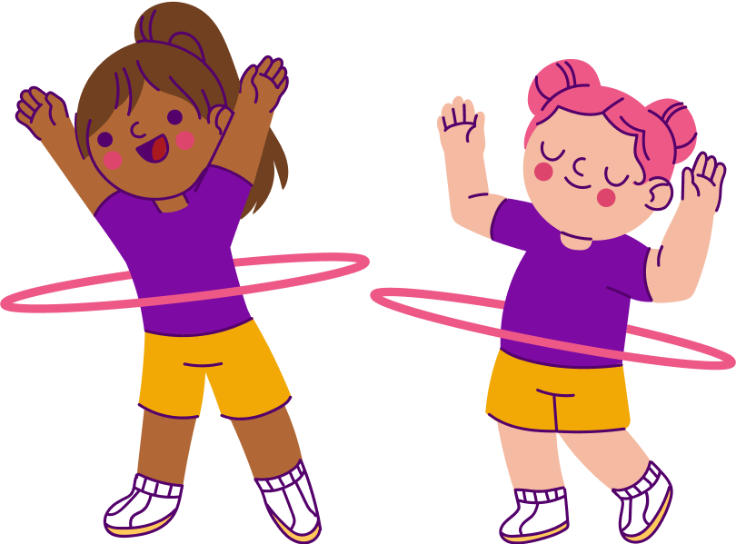

Trivia Sano
¡Porque ejercitarse
nunca había sido
tan divertido!

¡Porque ejercitarse
nunca había sido
tan divertido!
Trivia Sano es una página web que te ayuda a llevar una vida mucho más activa a través de la diversión.
Trivia Sano aporta al desarrollo de ODS Salud y Bienestar, el cual busca garantizar una vida sana y promover el bienestar en todas las edades es esencial para el desarrollo sostenible.
En Trivia Sano decidimos enfocarnos en los más pequeños, niños y niñas de 5 a 17 años. Sin embargo, puede ser usado con un adulto responsable.

Somos estudiantes de la Universidad Autónoma de Occidente en Colombia y la Universidad Pontificia Politécnica de Valparaíso de Chile, los cuales nos unimos para construir y dar vida a Trivia Sano, intentando así, beneficiar a los niños y niñas de 5 a 17 años a llevar una vida más activa a través de la diversión.